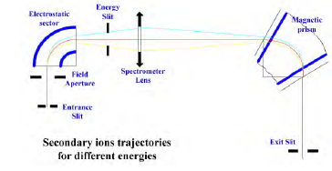
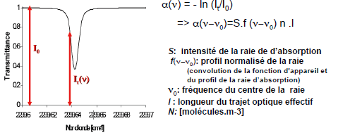
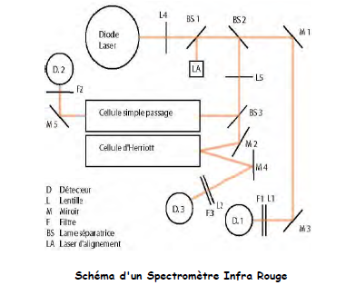

Outils d'observation et d'analyse en Géosciences¶
I) Spectrométrie de Masse : principes et instruments¶
A) Introduction¶
En 1834, Michael Faraday définit les ions comme les espèces chimiques responsables de la conductivité électrique. En 1898 Wien a montré qu'un flux d'ions peut-être dévié par un champ électrique et magnétique. En 1912 Thomson montre l'existence de deux isotopes du néon en utilisant un simple appareil à déflexion magnétique. En 1918 Dempster et en 1919 Aston fabriquent des appareils plus élaborés qui permettent de mesurer l'abondance relative de différents isotopes. Les premières spectromètres de masse réellement utilisables ont été mis au point pour l'industrie du pétrole dans les années 50. Ils permettaient d'analyser des molécules organiques de masse environ 500 et avec un point de "fusion" en dessous de 350-C.

A partir de ces isotopes, nous pouvons dater des roches et ainsi déterminer l'âge du système solaire à l'aide de météorites.
Fractionnement isotopique des éléments légers :
- géothermométrie et géobarométrie
- identification des processus de surface et des processus biogénique
- environnement, paléoclimat, paléo environnement
B) Principe général d'un spectromètre de masse¶
Les différents filtres de masse existantes¶
- Secteur magnétique : séparation des ions par un champ
- Temps de vol : séparation des ions en fonction de leur temps de vol
- Quadripolaires : séparation des ions par un champ électrique modulé
- Transformée de Fourier (FT-ICR): mesure des rapports isotopiques par spectrométrie infra-rouge. Les fréquences de rotation ou de vibration d'une molécule dépendent de la masse des atomes qui la composent. Résolution très bonne aux faibles masses.
Accélération des ions¶
Les ions placés dans un champ électrostatique subissent l'action d'une force constante qui leur communique un mouvement uniformément accéléré. L'énergie cinétique acquise en fin d'accélération est égale à zV.
zV = ½ mv²
A la sortie du champ électrostatique, tous les ions ayant la même énergie cinétique, leur vitesse dépendant de leur masse. Un champ élevé (x kV) permet une meilleure résolution (énergie cinétique des ions << zV) et donc la mesure de masses plus élevées.

Spectromètre magnétique¶
Un ion accéléré à une vitesse v sous l'action d'un champ magnétique B perpendiculaire à sa trajectoire est soumis à une force perpendiculaire à v et à B, suivant la règle d'AMPERE et de valeur Bzv. Cette force est la force centripète d'un mouvement circulaire uniforme de rayon R, que l'on sait être égale à mv² / R :
F = Bzv = mv²/R d'où R = mv/Bz
Pour B donné,
mv/z = (2Vm/z)^½ d'où R = (2Vm/B²z)^½
et
m/z = B²R² /2V
z étant la charge de l'ion.

Mesure des énergies cinétiques¶
Un ion placé dans un champ électrostatique circulaire E perpendiculaire à sa trajectoire est soumis à une force zE perpendiculaire à sa trajectoire. C'est la force centripète d'un mouvement circulaire de rayon r tel que zE = mv² /r
R ne dépend que du rapport V/E.
L'énergie cinétique totale des ions comprend :
- l'énergie d'accélération (zV0);
- l 'énergie d'émission
- les perte d'énergie (choc ou fragmentation)

Appareil à double focalisation¶
Focalisation en direction
Les ions issus d'une fente ont des trajectoires divergentes. Entre cette dernière et la fente du collecteur s'exerce l'action focalisante des champs magnétique et électrostatique.
Focalisation en énergie
La double déflection des ions par un champ électrostatique et un champ magnétique permet de corriger cette dispersion en énergie et d'obtenir une "haute résolution".

Avantages / désavantages¶
Ils peuvent atteindre des résolutions de masse très élevées. Ils sont très stables et peuvent accumuler des mesures sur de longues périodes -> grandes précisions des mesures
Cependant, le temps des mesure est long. La gamme de masse réduite en multcollection. Les instruments sont souvent massif et coûteux.
C) Spectromètres à temps de vol¶
Les Spectromètres à temps de vol sont les instruments les plus simples. Des ions de masses différentes quittant la source simultanément avec la même énergie mettent un temps différent pour atteindre le détecteur.
-> sources à courte durée de temps (sources pulsées) -> collecteur à haute résolution dans le temps.
Des ions de masses m1 et m2 auront des vitesses: vi = 2V^½/ mi^½.
Si la distance du trajet est d, le temps mis ti est :
ti =d mi^½ / 2V^½,
t1/t2 = v2/v1 = (m1/m2)^½
Le pouvoir de résolution est donné par : m/dm = ½t/dt
v= 1,39. 104 (zV/m)½
Si V = 5000 V et m = 2500 D,
v = 2 . 104 m sec-1 (20 km/sec ou 7200 km/h)
Pour un trajet entre la source et le collecteur est de 2 m, t = 10-4 sec. Si le plus petit intervalle de temps qui peut-être mesuré par le collecteur est de 5nsec, le pouvoir de résolution est de ~10 000.
Avantages / désavantages¶
Très grande sensibilité : tous les ions émis sont détecter. Analyse de surface. Technologie simple, peu encombrantes. Différents systèmes d'ionisation possible (faisceau d'ion, laser, haute tension)
Temps de mesures longs, à cause des délais entre chaque acquisition. La précision est limitée.
D) Spectrométrie de masse Quadripolaire¶
Le premier spectromètre de masse a été développé par Paul et al dans les années 60 et maintenant c'est le type de spectromètre le plus utilisé.
Un quadripôle est constitué de quatre électrodes parallèles de section hyperbolique ou cylindrique. Les électrodes opposées distantes de 2 r0 sont reliées entre elles et soumises au même potentiel.
Les électrodes adjacentes sont portées à des potentiels de même valeur, mais opposés de sorte que l'écart de potentiel soit égal à Φ0. Ce potentiel Φ0 résulte de la combinaison de tensions, l'une continue (U) l'autre alternative (V) de haute fréquence f :
Φ0 = U-V . Cos(2pi f t)
Un point de coordonnées (x,y,z) situé dans le champ électrique sera soumis au potentiel :
Φ = Φ0 (x²-y²)/r0²
La tension continue appliquée seule va extraire les ions du quadrupôle, en les attirant vers l'extérieur si leur trajectoire n'est pas exactement centrée. La tension alternative va leur donner un mouvement circulaire et des trajectoires en hélice.
La trajectoire d'un ion pénétrant dans le quadripôle sera décrite par les équations de Mathieu selon les deux autres axes. Il est possible de définir des valeurs U et V des zones de stabilité telles que les coordonnées x et y de l'ion restent strictement inférieures à r0. Les ions qui se trouvent dans cette zone auront donc une trajectoire stable dans le quadripole et seront détectés. Avec U/V constant, un balayage de U permet l'observation successive des ions de masse croissante. La résolution entre ces ions est d'autant plus grande que la pente de la droite est élevée.
Avantages / désavantages¶
Il ne nécessite par d'aimant et il est très compact. Il n'est pas nécessaire d'avoir un potentiel très élevé pour la source. Le temps de balayage de la plage de masse peut - être très rapide. On a pas besoin des fentes et il possède un haut niveau de transmission des ions.
Comparé à un spectromètre magnétique sa plage de masse et son pouvoir de résolution sont beaucoup trop modestes.
D) Spectromètre Infra rouge à transformé de Fourier (FT-ICR)¶
Séparations des ions par mesure de la fréquence de vibration d'un ion qui est inversement proportionnelle à la masse.
Principe: : mesure de l’absorbance α à partir du spectre d’absorption
 
Avantages / désavantages¶
Mesure de la concentration totale satisfaisante. Instrument adaptable à la mesure précise moyennement : changement de la source laser et adaptation du trajet optique
La fréquence élevée d'acquisition des mesures de concentration -> interêt pour les espèces à variation photochimique rapide comme NO, NO2 ou O3.
E) Les différentes techniques d'ionisation¶
Impact Electronique EI : Les électrons, émis par un filament chauffé, et accélérés par un potentiel (70 eV) interagissent avec les molécules sous forme gazeuse de l'échantillon.
Ionisation chimique CI : Ionisation par impact électronique sur un gaz réactif (CH4 ou NH3) en large excès par rapport à l'échantillon (A). L'ionisation du réactif est suivi par une réaction ion/molécule.
Fast Atom Bombardment : Les molécules fragiles comme les peptides sont dissous dans une goutte de glycérol. Cette solution est déposée sur une cible qui est bombardée par des atomes accélérés d'un gaz comme l'argon ou le xénon. Ue onde de choc se propage et expulse la molécule chargée avec un proton.
TIMS : L'échantillon (après séparation chimique) est déposé sur un filament (Ta, W, Re, Pt). Lors du chauffage, l'évaporation et l'ionisation sont soit simultanées (filament simple) soit consécutives (filament double ou triple). Chaque échantillon est déposé sur un filament qui va être placé dans un barillet pouvant contenir treize filaments. Le filament est chauffé entre 800 et 1000K, ce qui permet à l'échantillon de s'ioniser. Le faisceau obtenu est optimisé en ajustant le barillet, en réglant la vitesse du faisceau ou en réglant la focalisation verticale et horizontale.
MC-ICP MS : Échantillon liquide : ionisé dans un plasma d'Ar à 6000K. Cônes : interface source / analyseur : ne laissent passer qu'une partie des particules selon leur masse. On injecte des aérosol dans la torche, tout sera transformé en ion avec la température très importante. L'analyseur va sélectionner les ions selon leur énergie cinétique. L'électro - aimant sépare les ions selon leur masse.
SIMS : Determination des variations isotopiques et géochimiques à très courte échelle. Imagerie isotopique et géochimique. Pas de chimie mais les rapports isotopiques obtenus sont normalement moins précis que ceux déterminés après séparation chimique par les autres méthodes. Des ions primaires sont crées à partir d'un gaz (en général O, Ar, ..) dans une source à impact électronique ou par thermo-ionisation (Cs). Ils sont ensuite accélérés et localisés dans la colonne primaire sur une zone de l'échantillon (0,2 à 10µm selon l'élément et de la sonde). Combinaison de deux secteurs électrostatiques et magnétique en couplant les deux secteurs dans l'espace de manière à obtenir la double focalisation.
Détecteurs :
-
Cage de Faraday : Quand le faisceau d'ions frappe le fond de la cage Faraday, un courant électrique est produit. Ce courant est mesuré à travers une très grande résistance (typiquement 10^11 Ω). La forme allongée de la cage, ainsi que les plaques de suppression d'électrons, minimise la perte d'éventuels électrons secondaires, qui altéreraient le signal. Mesuré ainsi, un signal de 10^-11 A générera un signal de 1Volt.
-
Multiplicateur d'électrons : Quand un ion atteint la première dynode, plusieurs électrons sont émis. Le potentiel électrique qui est imposé entre les dynodes successives, accélèrent les électrons émis vers la dynode suivante. Chaque électron qui frappe une dynode provoque l'émission de plusieurs autres électrons, qui sont à leur tour accélérés ….
-
Galette à micro canaux : utilisée pour l'imagerie ionique, composée de milliers de petits multiplicateurs à dynodes continus. Le gain engendré par une plaque dans les SIMS permet d'atteindre facilement un gain de 10^6.
Analyses¶
Standard : échantillon dont la composition isotopique est connue et reconnue internationalement.
Chaque session d'analyse débute par le passage de standards.
Les analyses au spectromètre de masse introduisent un fractionnement isotopique instrumental. Tous les isotopes d'un même élément n'ont pas le même rendement d'ionisation. Il est lié soit au processus d'ionisation, soit à la transmission du spectromètre, soit au fonctionnement du collecteur. Chaque technique analytique a donc un fractionnement qui lui est propre.
Dans le cas de l'analyse d'éléments avec au moins deux isotopes non radiogéniques, une normalisation interne peut être réalisée en utilisant une valeur reconnue au niveau international.
146Nd/144Nd = 0,7219, 86Sr/88Sr = 0,1194
Grâce à ces rapports connus, une correction du fractionnement dépendant de la masse induit par l'analyse peut être effectuée. Cette correction suit une loi linéaire, puissance ou exponentielle.
Dans le cas d’isotopes stables, ou lorsque l’élément analysé ne possède pas deux isotopes non radiogéniques :
– la correction se fait par comparaison avec un standard analysé dans les mêmes conditions que l’échantillon – ajouter un autre élément, d'une masse semblable à celle de l'élément étudié, avec deux isotopes non-radiogéniques qui peuvent être utilisés pour une correction interne.
II) Techniques de préparation des échantillons et séparation chimique, protocoles analytiques¶
Quelles méthodes ou quels outils pour répondre aux mêmes questions ?
Quel est l'âge de la Terre : les dépôts sédimentaires en aval d'un fleuve
Quel est l'âge des continents et des océans : marges de l'Océan Pacifique
Ou trouver le cuivre et du zinc : prospection de recherche en remontant les filières
Quelle était la température des océans à l'archéen : minéraux formés dans l'Océan
L'échantillonnage est important pour la colecte des données et pour l'analyse et l'interprétation des résultatd.
Les questions initiales :
- combien d'échantillons inclure dans mon étude?
- quels critères devrais-je utiliser pour les choisir?
- combien d'analyses faire ?
Les réponses à ces questions :
- le nombre nécessaire pour obtenir des réponses significatives
- les critères qui reflètent les objectifs de votre étude
- le nombre nécessaire pour obtenir les informations que vous recherchez dans les limites de vos ressources (humaines, matérielles et de temps)
La stratégie d'échantillonnage va introduire une démarcation claire entre les études quantitatives et les études qualitatives.
|| Etude qualitative || Etude | quantitative| |--------|--------| | nombre d'échantillons restreints analysés en profondeur, échantillons ciblés et non aléatoire, sous ensemble plus spécifique | grand nombre d'échantillons indépendamment de leur contexte(signification statistique).échantillonnage aléatoire | | attention particulière au caractère unique, spécifique.les échelles employées adaptées pour tenir compte des variations individuelles. | échelles normalisées, nombre restreint de dimensions pré établies.Analyse statistique: tendances médianes - moyennes et écarts type |
Faire la distinction entre les stratégies d'échantillonnage ciblées et aléatoires
La nature exacte d'un échantillonnage ciblé peut évoluer au cours de l'étude
{kind=link}


Mise en solution par voie humide :
- Acide Fluorhydrique HF: dissous la silice H2SiF6 (l) SiF4(g) dangereux, sels insoluble de Ca, Mg, ... volatiles B, As,Ge, Sb
- Acide Chlorhydrique HCl: peu utilisé seul, sauf pour les carbonates.
- Acide Nitrique HNO3 : mise en solution des sulfures, arséniures.HNO3 HCl (1:3) : eau régale, mise en solution des métaux lourds
- Acide Perchlorique HClO4 : acide le plus fort. Seul les alcalins sont insolubles. Reprise en HCl dilué.Oxydation de MO. Dangereux.
- Acide Sulfurique H2SO4: oxidant,mais forme des sulfates peu solubles.utilisé en mélange avec HF, notamment pour doser le F.
Mise en solution des silicates :
- Avec perte de silice Mélange HClO4 : HF à 200°C
- Sans perte de siliceHF seul, HF-HCl
Mise en solution des minéraux réfractaires :
- Sulfures :dissolution en H2SO4
- Sulfates : fusion avec Na2CO3
- Silicates: zircon, tourmaline, béryle, topaze, disthène, .. - Oxydes : corindon, rutile, spinelles (Al ou Cr)... -mise en solution en bombe (110-250°, 80 - 300105Pa)Fusion au métaborate(Li2O B2O3), reprise en HCl ou HNO3
Echangeurs cationiques : ce sont en général des polymères organiques contenant des fonctions -C-OH=O ou -SO3H (acide sulfonique) de la forme

Une résine cationique retient mieux les cations de charge ionique plus élevée,par exemple la fixation des ions va diminuer dans le sens :Th4+ > Ac3+ > Ra2+ > Fr+ (éléments de la 7ème période de rayon ionique équivalent)
ou à charge ionique constante , les cations de rayon ionique plus grand :Cs+ > Rb+ >K+ > Na+ > H+
Résines amioniques : polymères organiques, genre styrène ou divinyl-benzène avec des groupements NH3+ dans lesquelles le contre - ion est de type Cl- ou OH-.
On peut séparer un grand nombre de cations sur des résines anioniques en complexant le cation sous formes anioniques mono ou multi chargées.

Schéma simplifié du spectromètres de masseMC-ICPMS Nu Plasma utilisés pour les mesures des compositions isotopiques du magnésium à l'ENS de Lyon.

Séparation des minéraux

III) Acquisition et traitement des données¶
Que mesure t-on dans un spectromètre de masse?
Un faisceau d'ion définis par :
- un rapport m/q
- une énergie E = ½ mv² =qv
q = charge élémentaire 1.602 x 10-19C
1 A = 1 C/s
Système de mesure¶
Cage de Faraday¶

N/t = l/q
1 nano-ampère (10-9 A) = 6.24 109 ions /s.

Mesure directe du potentiel aux bornes d'une grande résistance (typiquement 10-11) A ~ 1 volt
Forme allongé + plaques de répulsion -> faible perte d'électrons secondaires
Ampèremètre analogique¶
-
ampèremètre magnéto-électrique : galvanomètre à cadre mobile -> une bobine montée sur pivot, dans le champ magnétique d'un aimant fixe. Le courant induit dans la bobine un champ électromagnétique, qui la fait pivoter par répulsion des champs magnétiques. Plus le courant est intense, plus la bobine bascule.
-
ampèremètre ferro-magnétique : deux palettes de fer doux à l'intérieur d'une bobine, l'une fixe, l'autre montée sur pivot. Quand le courant passe dans la bobine, les deux palettes s'aimantent et se repoussent, quel que soit le sens du courant. Cet ampèremètre non polarisé, mesure la valeur efficace de courant alternatif de forme quelconque (mais de fréquence faible < 1 kHz).
-
ampèremètre thermique : un fil résistant chauffé par effet Joule, provoque la rotation de l'aiguille à laquelle il est fixé. L'ampèremètre thermique n'est pas polarisé, et peux mesurer la valeur efficace des courants alternatifs jusqu'à des fréquences de plusieurs mégahertz
Ampèremètre numérique¶
C'est en fait un voltmètre numérique mesurant la tension produite par le courant à mesurer dans une résistance (appelée shunt). La valeur du shunt dépend du calibre utilisé. En application de la Loi d'Ohm, La tension U mesurée est convertie, en fonction de la valeur de résistance connue R du shunt, en une valeur A correspondant au courant.
Convertisseur analogique, numérique double rampe¶
Convertisseur analogique-numérique double rampe : transforme une tension en un temps, les 2 grandeurs étant proportionnelles. Le temps est ensuite numérisé à l'aide d'un compteur. fonctionne en deux étapes :
-
Première étape : K1 est fermé et K2 est ouvert. intégration de la tension vx(t) pendant une durée Tint fixe (période d'intégration). La tension en sortie de l'intégrateur est égale à la tension aux bornes du condensateur et a pour expression : vs (t) = 1/R1C∫0Tint vx∂t
-
Deuxième étape. K2 est fermé et K1 est ouvert : décharge à courant constant du condensateur. Un compteur mesure la durée ∆tx nécessaire à la décharge, proportionnelle à la valeur de la tension atteinte à la fin de l'étape 1.
Ce type de convertisseur est limité des basses fréquences à quelques dizaines de Hz avec des durées d'intégration de ~100 ms. Il constitue le circuit de base des voltmètres numériques.
Multiplicateurs d'électrons¶
Quand un ion atteint la première dynode -> plusieurs électrons. Le potentiel électrique entre les dynodes accélèrent les électrons émis vers la dynode suivante. A chaque étape, chaque électron -> plusieurs électrons => amplification du signal => mesure en mode digital ou analogique.
EM en mode analogique: mesure du courant en sortie
L'amplification est ajustée en changeant la tension du EM (1-3 kV). La sensibilité est ajustée en changeant la résistance (109- 1011Ω). Permet de réaliser des mesures à des taux de comptage plus élevés que le mode digital, et une meilleur sensibilité que les FC. Mesure sur voltmètre numérique, précise et stable.
Mesure en mono collection¶
Instrument ancien, ou mesure à haute résolution ou grande dispersion de masse.
Protocole de mesure.
- Démarrage de la source, réglage du spectromètre.
- Détermination du champ magnétique pour chaque masse
- Acquisition des mesures par saut de pics
Cycle de mesures : TC, TM1, TC, TM2, TC, TM3, ... Bloc de mesures de N cycles : interpolation dans le temps, moyenne, Correction du bruit de fond, correction de discrimination de masse.
- Accumulation des blocs de mesures jusqu'à l'obtention d'une précision suffisante ou jusqu'à épuisement de l'échantillon.
Mesure en multi collection¶
Instrument moderne, mesure à moyenne résolution et dispersion de masse limitée.
Protocole de mesure.
- Démarrage, réglage du spectromètre.
- Alignement des détecteurs
- Acquisition des mesures par blocs, moyenne, Correction du bruit de fond, correction de discrimination de masse.
- Accumulation des blocs ...
Précision et justesse des mesures¶
Précision interne:¶
Traitement statistique d'une analyse. Comptage d'ions : Loi de poisson : probabilité d’un événement sur une durée, tel que le nombre de voitures qui passent un péage par tranche de temps, le nombre de fautes de frappe par page, ou le nombre d'ions 28Si+ comptés par seconde.Une variable aléatoire X suit une loi de poisson de paramètre λ.
Pour 100 ions , la précision est ± 10 %, pour 106 ions ± 1 ‰ Limite intrinsèque à la précision des mesures en comptage d'ions, sans tenir compte du bruit ou des différents biais analytiques.
Example
En ajoutant 3,50 g d’un spike contenant 7,50 ppm (μg/g) de Rb à 0,25 g de roche, on obtient un rapport 87Rb / 85Rb mel de 1,55. Quelle est la concentration en Rb de l'échantillon ? Données : 87Rb = 86,9092 et 85Rb = 84,9117,
Abondances isotopiques : naturelles :85Rb = 72,17%; 87Rb = 27,83% du spike, 87Rb = 99,4%; 85Rb = 0,6%
ne/ns=(AbsA−Rmel×AbsB)/(AbeB×Rmel−AbeA)
Avec m la masse et M la masse atomique,
me=ms×Me/Ms(0.994−1.55×0.006 /0.7217×1.55−0.2783)
ne=me/Me et ns=ms/Ms
Correction
Calcul des masses atomiques :
- Me = 86,9092 x 0,2783 + 84,9117 x 0,7217 = 85,4676
- Ms = 86,9092 x 0,994 + 84,9117 x 0,006 = 86,8972
Calcul de la masse de Rb dans le spike :
ms = 7,5 x 3,5 = 26,25 μg
On a donc 26,25μg de Rb dans le spike.
Calcul de la masse de Rb dans l’échantillon.
me=(26.25×85.4676)/86.8972[0.994−1.55×0.006 / 0.7217×1.55−0.2783]=30.25
soit 30,25μg de Rb dans les 0,25g de roche
[Rb] = 30.25 / 0.25 = 121 μg/g soit 121 ppm.